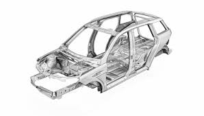

Turbo

Click for more info
Turbo
A turbocharger is a forced induction system that increases the air pressure delivered to an internal combustion engine. It does this by compressing the air that is entering the engine, which results in a denser air-fuel mixture.
This denser mixture leads to increased power and efficiency from the engine.
A turbocharger is composed of a compressor and a turbine, which are connected by a common shaft. The turbine is powered by the exhaust gases from the engine, which drives the compressor to compress the incoming air.
The compressed air is then delivered to the engine, where it is mixed with fuel and burned to create power.
Turbochargers are used in vehicles to increase the engine's power output, which can provide improved acceleration, towing capacity, and overall performance.
They are especially useful in smaller engines, where they can help to offset the power loss that occurs due to their smaller size.
Turbochargers are commonly found in performance vehicles, but they are also used in many diesel-powered vehicles, where they can provide significant improvements in fuel efficiency. Overall, turbochargers are a popular choice for vehicles that need to balance the demands of performance and fuel efficiency.
Supercharger

Click for more info
Supercharger
A supercharger is a device that increases the air pressure fed to an internal combustion engine, allowing it to burn more fuel and produce more power. This is achieved by using a mechanically driven compressor powered by the engine's crankshaft, rather than by exhaust gases like a turbocharger.
The compressed air is then delivered to the engine's intake, increasing the amount of oxygen available for combustion and thus increasing power.
Superchargers can be either positive displacement or dynamic. Positive displacement superchargers work by trapping a fixed volume of air in a compression chamber and forcing it into the engine, while dynamic superchargers use a spinning impeller to compress air and deliver it to the engine.
Supercharging can increase an engine's power output significantly, but it also puts additional stress on the engine and its components, so proper tuning and maintenance are important.
Engine

Click for more info
Engine
A car engine is a type of internal combustion engine that converts fuel into mechanical energy to power a vehicle. The basic components of a car engine include cylinders, a crankshaft, pistons, a camshaft, valves, a fuel system, and an ignition system.
In a car engine, fuel and air are mixed and burned in the combustion chamber, creating high-pressure gases that push the pistons. The movement of the pistons is transferred to the crankshaft, which converts the linear motion of the pistons into rotary motion to drive the wheels.
There are several types of car engines, including gasoline engines, diesel engines, and hybrid engines. The choice of engine type depends on various factors, including fuel efficiency, power output, emissions, and cost.
Car engines can be either naturally aspirated or forced induction. Naturally aspirated engines rely on atmospheric pressure to supply air to the combustion chamber, while forced induction engines use either a turbocharger or a supercharger to compress air and increase power output.
The efficiency and performance of a car engine can be improved through various techniques, including tuning, engine management systems, and the use of high-performance components.
Gearbox

Click for more info
Gearbox
A gearbox, also known as a transmission, is a crucial component in a car's drivetrain that transmits power from the engine to the wheels. It allows the engine to operate at its most efficient speed while providing the necessary power and speed to move the vehicle.
A gearbox typically contains a series of gears that can be engaged and disengaged to change the gear ratio between the engine and the wheels. This allows the vehicle to operate at different speeds and torque levels, which is essential for driving at different speeds and road conditions.
There are several types of gearboxes used in cars, including manual transmissions, automatic transmissions, continuously variable transmissions (CVT), and dual-clutch transmissions. Manual transmissions require the driver to manually shift gears, while automatic transmissions use a hydraulic system to change gears. CVTs are designed to provide an infinite number of gear ratios, while dual-clutch transmissions use two clutches to provide fast and smooth gear changes.
The gearbox plays a critical role in the performance, fuel efficiency, and overall driving experience of a vehicle. A well-designed and properly functioning gearbox is essential for smooth and efficient driving, while a faulty or worn-out gearbox can lead to poor performance and reduced fuel efficiency.
Suspension

Click for more info
Suspension
The suspension system in a car is responsible for providing a comfortable and stable ride, as well as maintaining contact between the tires and the road. The suspension system consists of several components, including springs, shock absorbers, and control arms
Springs are designed to absorb and dampen the shocks and vibrations generated by the road surface. Shock absorbers are hydraulic devices that control the rebound and compression of the springs, helping to maintain the stability of the vehicle. Control arms are metal components that connect the wheels to the vehicle's chassis and allow them to move up and down while maintaining proper alignment.
There are two main types of suspension systems used in cars: independent suspension and live axle suspension. Independent suspension is a more complex system in which each wheel is able to move independently of the other, providing a smoother ride and better handling. Live axle suspension is a simpler system in which both wheels on the same axle move together, providing a more rugged ride but less handling capability.
The suspension system is a critical component of a vehicle, as it has a direct impact on the ride comfort, handling, and overall safety of the vehicle. Regular maintenance and inspection of the suspension system is essential to ensure that it continues to perform effectively and provide a smooth and stable ride.
Chassis
Click for more info
Chassis
The chassis of a car refers to the underlying frame or structure that supports the body and all the other components of a vehicle. It is the foundation upon which the car is built and includes elements such as the frame rails, cross members, and suspension mounts.
The chassis provides strength and rigidity to the vehicle, allowing it to withstand the forces generated by driving and handling. It also serves as the mounting point for all the other components, including the engine, transmission, suspension, and body.
There are two main types of chassis used in cars: unibody and body-on-frame. Unibody construction involves welding the body and frame of the vehicle into a single unit, providing a lighter and more rigid structure. Body-on-frame construction involves mounting the body of the vehicle onto a separate frame, providing a more durable and rugged structure.
The design and construction of the chassis are critical to the overall performance and safety of the vehicle. A well-designed chassis provides a strong and rigid foundation, improving handling and stability, while also providing a safe and comfortable ride. Regular maintenance and inspection of the chassis can help to ensure that it continues to perform effectively and provide a safe and reliable driving experience.